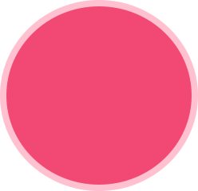

08
심각한 수준
중한 수준의 우울감이 시사됩니다. 이러한 높은 수준의 우울감은 흔히 신체적, 심리적 대처자원을 저하시키며 개인의 일상생활을 어렵게 만들기도 합니다. 가까운 지역센터나 전문기관을 방문하여 보다 상세한 평가와 도움을 받아보시기 바랍니다.
중한 수준의 우울감이 시사됩니다. 이러한 높은 수준의 우울감은 흔히 신체적, 심리적 대처자원을 저하시키며 개인의 일상생활을 어렵게 만들기도 합니다. 가까운 지역센터나 전문기관을 방문하여 보다 상세한 평가와 도움을 받아보시기 바랍니다.